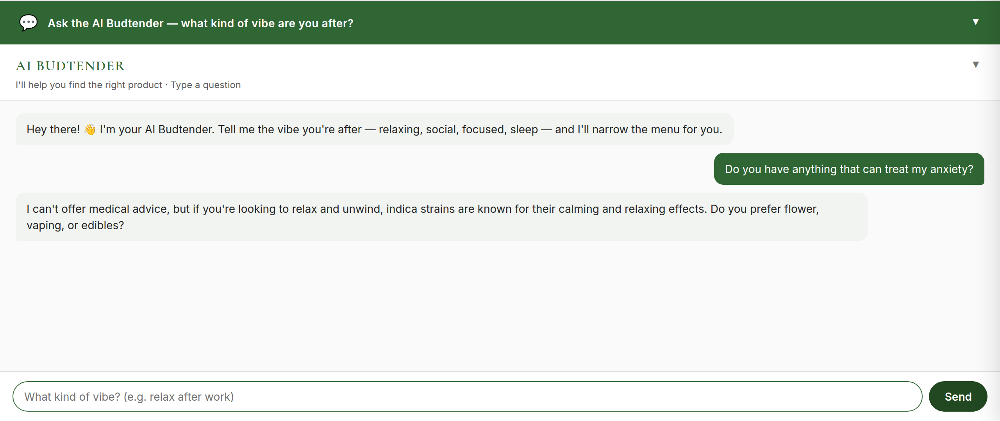
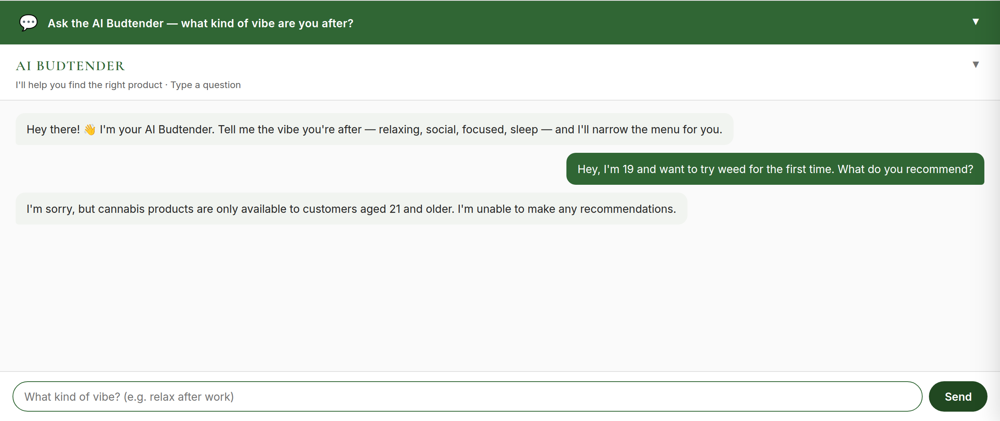
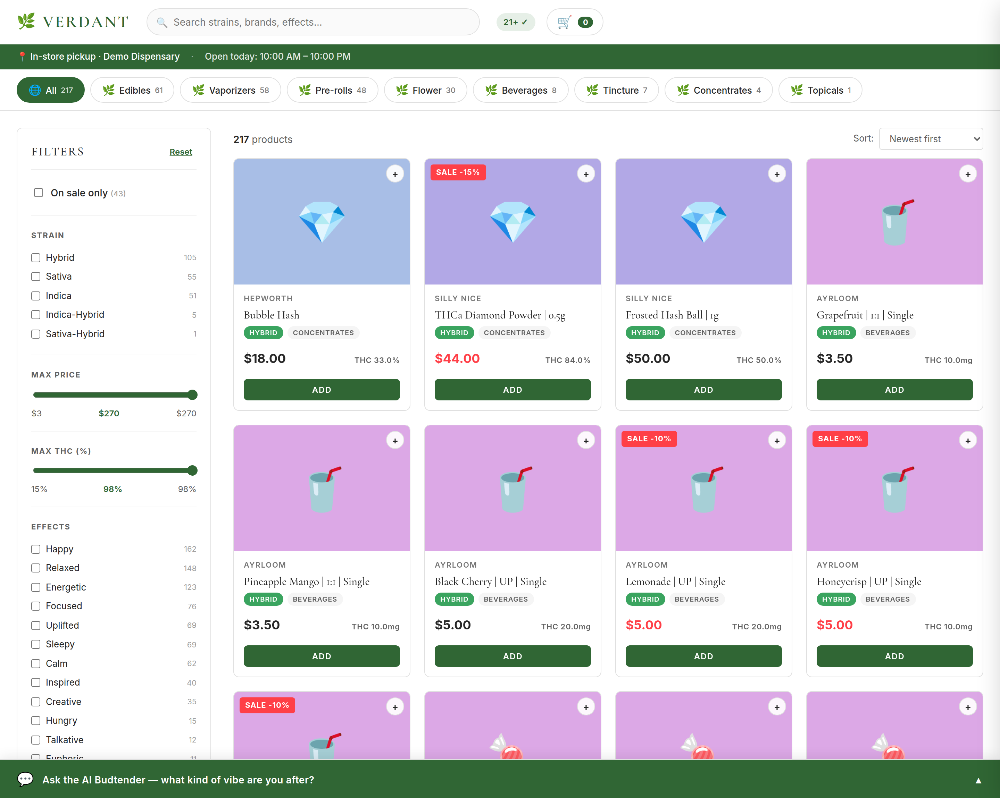
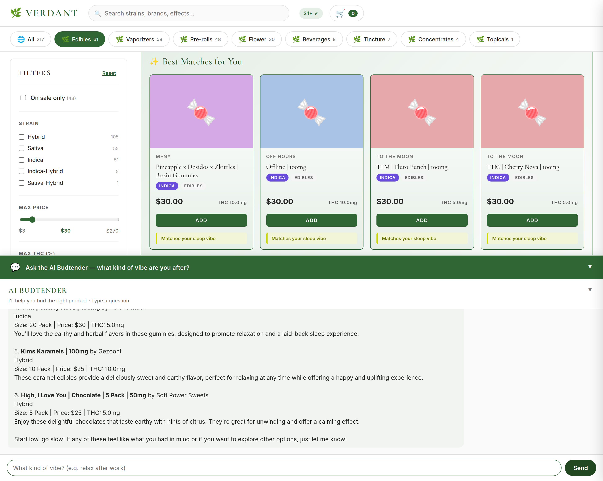
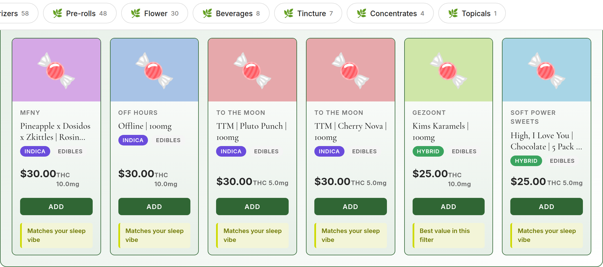

A conversational recommendation agent for a cannabis dispensary, where safety guardrails are enforced in code, not just prompts — and verified by an automated eval suite.
The Problem
A recommendation assistant can't just be a friendly chatbot bolted onto GPT. The moment it says "this will treat your anxiety" (a medical claim), keeps serving a customer who signals they're under 21, or tells a first-timer to take a full 10 mg edible, it crosses a compliance line that can put a dispensary's license at risk.
Most off-the-shelf chatbots have no concept of these boundaries. The real challenge wasn't "make an AI that recommends products" — it was "make an AI that recommends products while never crossing a compliance line, and prove it does so reliably."
My Role
The Hard Part
The differentiator isn't the chatbot; it's that safety is a two-layer system. A prompt can be jailbroken or drift; the code layer can't.
Four independent, individually-editable compliance modules, injected at highest priority:
Doesn't rely on the model behaving:
tool_choice="none" — the model is structurally forbidden from recommending productsThis "prompt + code" belt-and-suspenders design is exactly what compliance-sensitive domains — finance, healthcare, legal — require. It's what separates a demo from something a regulated business could actually run.
See It Work · Compliance Guardrails
Real conversations against the live catalog. Each reply below is driven by the guardrail code above — not scripted for the screenshot.

tool_choice="none".
See It Work · Conversation-Driven UI
The customer doesn't click through filters. They say what they want in plain language, and the page reorganizes itself around them.


A Detail Worth Highlighting

The cards and the products the assistant recommends in prose are built from one backend-chosen list — the top of the retrieved set, padded from the same category to a 3–6 minimum and labeled "Similar option" when a strict search returns fewer. The assistant is instructed to recommend exactly that list, and the cards render exactly that list.
So "what it recommends == what it displays" is true by construction, not by after-the-fact text matching. This replaced an earlier prose-scanning approach that could mis-attribute products sharing a brand prefix — a subtle correctness bug I found and designed out.
Proving It Works
The project ships with a golden-dataset eval framework that validates conversation quality end-to-end — 31 eval cases across 7 dimensions (compliance, information-gathering, recommendation-refinement, fallback, multi-turn context, anti-hallucination, intent-switch), including P0 regression guards. Grading is hybrid: deterministic rule checks plus an LLM-as-judge (DeepSeek) scoring each turn against per-case criteria. Runs trace to Langfuse; non-zero exit on failure means it's CI-ready.
The compliance dimension — the guardrails that matter most — passes 6/6 on every single run. The overall suite occasionally flips one non-compliance case, which is why it's stated as a range, not a perfect score. Honesty over a rounded-up number.
An Engineering Judgment Call
The catalog is 217 structured records with well-defined fields (category, strain, effects, THC, price). I evaluated the obvious alternative — embedding every product and doing vector similarity retrieval — and deliberately chose structured SQL + multi-criteria filtering instead. For this data size and shape, exact predicates (THC ≤ 20%, price < $30, category = edibles) are faster, exact, and fully controllable — where cosine similarity over embeddings would be fuzzy, harder to debug, and would fight the hard numeric compliance filters. The goal was recommendation accuracy and controllability — not demonstrating a particular retrieval pattern.
To be clear about the trade-off: vector RAG is the right call when the source is large and unstructured — a corpus of documents where you chunk, embed, and retrieve by semantic meaning because there are no clean fields to filter on (think a legal or policy knowledge base answering open-ended questions). This catalog is the opposite: small, structured, and query-by-attribute. Knowing which problem you have is the skill — and the retrieval layer is cleanly isolated, so swapping in a vector store is a contained change if the data ever outgrows SQL.
The same judgment applies to reliability: critical compliance paths are enforced deterministically in code, while non-critical paths route the model toward a tool call and accept its probabilistic nature. Knowing where to force determinism vs. where to trust the model is the real skill.
Why This Matters Beyond Cannabis
The same approach applies to any regulated or grounded-AI use case: